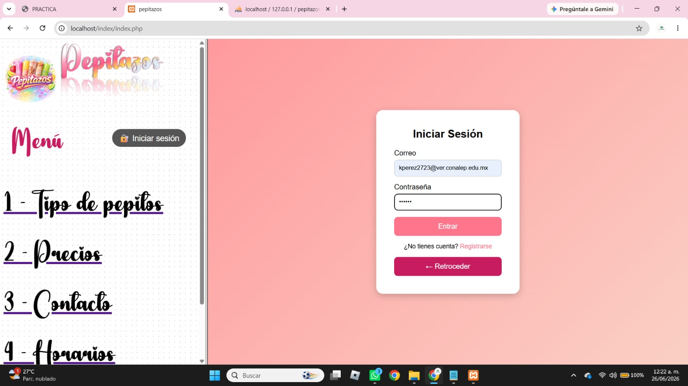
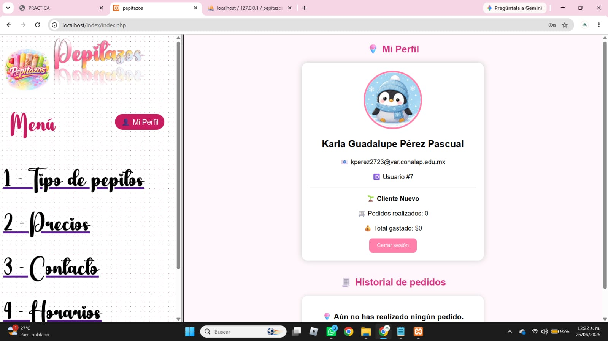
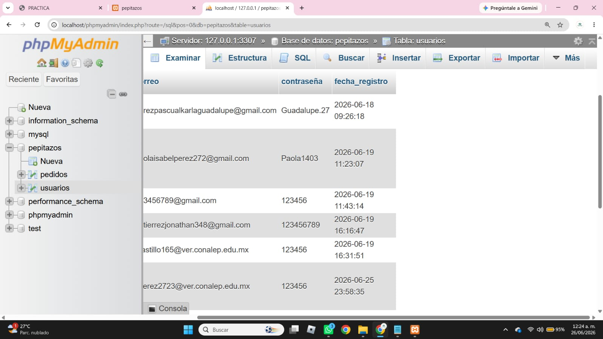

Sistema de Inicio de Sesión y Perfil con PHP y MySQL
En esta práctica se desarrolla un sistema completo de autenticación de usuarios utilizando PHP y MySQL. El sistema permite que un usuario pueda iniciar sesión, mantener su información activa mediante sesiones y visualizar un perfil personalizado con sus datos almacenados.
Este tipo de sistemas es la base de la mayoría de aplicaciones web modernas, ya que permite controlar el acceso a usuarios y manejar información de forma segura y organizada.
El sistema utiliza PHP con sesiones (session_start) para guardar la información del usuario cuando inicia sesión. Estos datos se almacenan temporalmente en el servidor mientras la sesión está activa.
Cuando el usuario introduce sus datos en el formulario de login, el sistema los compara con los registros de la base de datos. Si son correctos, se crea una sesión con la información del usuario.
Después del inicio de sesión, el sistema redirige al perfil, donde se muestran datos como nombre, correo, tipo de usuario y estadísticas básicas como pedidos o actividad.
También se incluye la función de cerrar sesión, la cual elimina los datos de la sesión y regresa al estado inicial del sistema.
La base de datos es fundamental en este sistema, ya que almacena la información de los usuarios registrados. PHP se conecta a MySQL para consultar y validar los datos ingresados en el login.
Esta conexión permite que el sistema sea dinámico, es decir, que los datos no estén fijos en el código, sino que puedan cambiar según los usuarios registrados.



Esta práctica permite comprender cómo funciona un sistema real de autenticación en aplicaciones web, integrando HTML, CSS, PHP y bases de datos.
Se aprende cómo gestionar sesiones, proteger información del usuario y mostrar contenido dinámico dependiendo del estado de inicio de sesión.
Es un paso importante para el desarrollo de sistemas web más avanzados como redes sociales, tiendas en línea o paneles de administración.